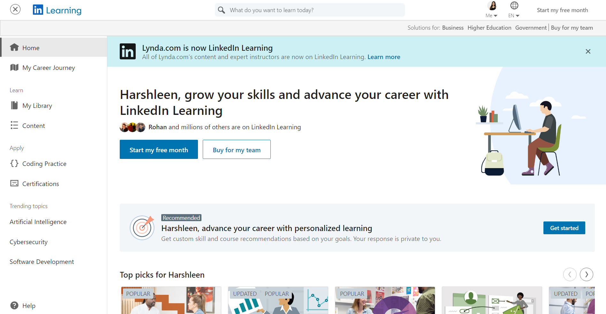

Programming is an intriguing sector as it gives us the superpower to regulate computer programs on the go. It can be used for ships, traffic control, robotics, self-driving vehicles, smartphone applications, websites, and many other things.
To ensure that you remain up to date on standards and protocols, and even more so in the field of coding, it is important to track developments in your field. Programmers of all specialities can easily benefit from keeping track of the new developments & following industry-leading blogs and websites.
These bloggers have made a name for themselves in the programming world by posting important, high-quality data and tips for coders. You can learn tricks and shortcuts you would never have dreamed of doing otherwise by following programming blogs.
You’ll surely want to subscribe to these helpful programming websites and blogs written by the best blogging coders. So, let’s get started!
List of Programming Blogs and Websites to Improve Your Coding Skills
1. Better Programming
Better Programming is a programming-oriented blog on Medium. They publish multiple articles every day from several authors, all curated and edited to ensure excellent content.
They cover a range of subjects and languages for programming, with content for both beginners and very advanced readers. If you want to develop programming skills, it’s a must-have on your daily reading list. So, before you plan to start your own programming blog, it is best to be a regular reader of Better Programming blogs!
2. Lynda
Lynda is one of the best online learning programming websites for most people worldwide, with over 6000 courses ranging from WordPress to PHP. Lynda also lets you evaluate your performance through quizzes.
You must be wondering about the subjects that are covered on this programming blog. Well, Lynda has a wide variety of subjects, but a few of the courses that you can find on this website related to web development are:
- WordPress
- PHP
- CSS and HTML
- JavaScript
- Angular
- Node.js and React.js
Want to know the attributes that make this tool special when it comes to learning codes? Well, Lynda is a premium site for online learning that teaches you everything from 3D automation to coding to web creation. It has many video courses that you can use and learn better coding from your computer or tablet.
Read more: Top 11 Code Editors for Software Developers
3. Erik Bernhardsson
Erik Bernhardsson is an outstanding blogger and coder with a programming blog. He discusses topics concerning all coders, such as Git repository, IDEs, naming conventions, and Windows support problems.
You can check out this minimalist, well-written coding blog if you’re interested in coding from a business perspective or if you want to pick up some short tips for your next project. Bernhardsson also tackles problems in the wider context that concern programmers, such as conversion rates or SaaS (Software as a Service).
4. My Programming Blog

This blog includes posts on tips, techniques, and shortcuts regarding programming. It includes C, Java, PHP, Python, and Ruby on Rails tutorials. Established in 2011, the blog is intended to help individuals explore tools for programming and development.
The blog founder began the site with some simple notes and questions he gathered in his college class. The posts were evidently in high demand by the audience, and eventually, his personal blog became the one-stop destination for programming reviews, snippets, and tutorials.
5. David Walsh Blog
David Walsh is a viral blogger in the world of developers. Basically, he’s a software developer who works for Mozilla, the tech giant. If you’ve ever wanted to learn about web creation, then you must have come across the Mozilla Developer Network (MDN) step-by-step documentation.
David Walsh played a huge role in strengthening that website. So, given his expertise and experience in the field of web creation, you can certainly learn a lot from his blog.
Read more 11 Best Text Editors For Windows, Mac, Linux & More
6. SoloLearn
SoloLearn is the fastest-growing online community dedicated to coding and has over 22 million learners worldwide learning how to code using their website.
What are the subjects that this programming blog covers? Using this platform, you can learn over 10 programming languages for free. Posts related to Python, HTML, CSS, JavaScript, C++, Java, PHP, SQL, Ruby, JQuery, C#, Swift, and more are included in the collection!
What are the characteristics that render coding special to this site? This site’s main use is that it blends the best user-generated top-notch content with support in real-time. To hone your coding skills, you can also use their forum to connect with other programmers.